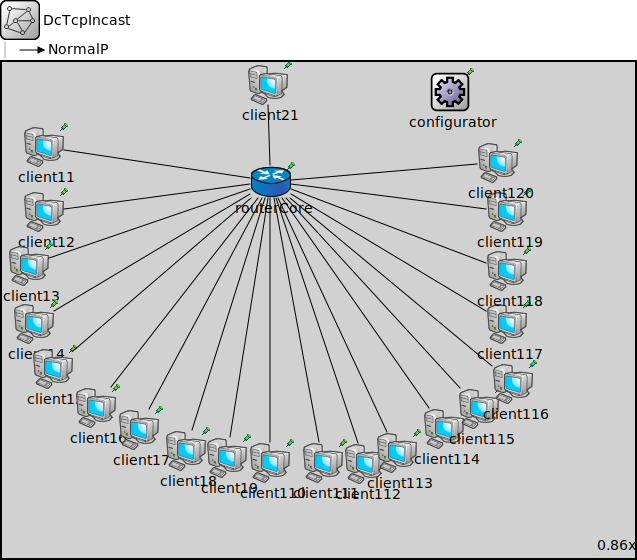

Package: inet.examples.inet.dctcp
DcTcpIncast
network(no description)
Usage diagram
The following diagram shows usage relationships between types. Unresolved types are missing from the diagram.
Properties
| Name | Value | Description |
|---|---|---|
| isNetwork | ||
| display | bgb=740,580 |
Unassigned submodule parameters
| Name | Type | Default value | Description |
|---|---|---|---|
| routerCore.status.initialStatus | string | "UP" |
TODO @signal, @statistic |
| routerCore.pcapRecorder.verbose | bool | true |
whether to log packets on the module output |
| routerCore.pcapRecorder.pcapFile | string | "" |
the PCAP file to be written |
| routerCore.pcapRecorder.fileFormat | string | "pcapng" | |
| routerCore.pcapRecorder.snaplen | int | 65535 |
maximum number of bytes to record per packet |
| routerCore.pcapRecorder.dumpBadFrames | bool | true |
enable dump of frames with hasBitError |
| routerCore.pcapRecorder.moduleNamePatterns | string | "wlan[*] eth[*] ppp[*]" |
space-separated list of sibling module names to listen on |
| routerCore.pcapRecorder.sendingSignalNames | string | "packetSentToLower" |
space-separated list of outbound packet signals to subscribe to |
| routerCore.pcapRecorder.receivingSignalNames | string | "packetReceivedFromLower" |
space-separated list of inbound packet signals to subscribe to |
| routerCore.pcapRecorder.dumpProtocols | string | "ethernetmac ppp ieee80211mac" |
space-separated list of protocol names as defined in the Protocol class |
| routerCore.pcapRecorder.packetFilter | object | "*" |
which packets are considered, matches all packets by default |
| routerCore.pcapRecorder.helpers | string | "" |
usable PcapRecorder::IHelper helpers for accept packettype and store/convert packet as specified linktype currently available: "inet::AckingMacToEthernetPcapRecorderHelper" |
| routerCore.pcapRecorder.alwaysFlush | bool | false |
flush the pcapFile after each write to ensure that all packets are captured in case of a crash |
| routerCore.pcapRecorder.displayStringTextFormat | string | "rec: %n pks" | |
| routerCore.interfaceTable.displayAddresses | bool | false |
whether to display IP addresses on links |
| routerCore.cb.displayStringTextFormat | string | "processed %p pk (%l)" |
determines the text that is written on top of the submodule |
| routerCore.cb.forwardServiceRegistration | bool | true | |
| routerCore.cb.forwardProtocolRegistration | bool | true | |
| routerCore.bl.displayStringTextFormat | string | "processed %p pk (%l)" |
determines the text that is written on top of the submodule |
| routerCore.bl.forwardServiceRegistration | bool | true | |
| routerCore.bl.forwardProtocolRegistration | bool | true | |
| routerCore.li.displayStringTextFormat | string | "processed %p pk (%l)" |
determines the text that is written on top of the submodule |
| routerCore.li.forwardServiceRegistration | bool | true | |
| routerCore.li.forwardProtocolRegistration | bool | true | |
| routerCore.eth.bitrate | double | ||
| routerCore.nl.displayStringTextFormat | string | "processed %p pk (%l)" |
determines the text that is written on top of the submodule |
| routerCore.nl.forwardServiceRegistration | bool | true | |
| routerCore.nl.forwardProtocolRegistration | bool | true | |
| routerCore.tn.displayStringTextFormat | string | "processed %p pk (%l)" |
determines the text that is written on top of the submodule |
| routerCore.tn.forwardServiceRegistration | bool | true | |
| routerCore.tn.forwardProtocolRegistration | bool | true | |
| routerCore.at.displayStringTextFormat | string | "processed %p pk (%l)" |
determines the text that is written on top of the submodule |
| routerCore.at.forwardServiceRegistration | bool | true | |
| routerCore.at.forwardProtocolRegistration | bool | true | |
| routerCore.bgp.interfaceTableModule | string |
The path to the InterfaceTable module |
|
| routerCore.bgp.routingTableModule | string | ||
| routerCore.bgp.ospfRoutingModule | string | parent.hasOspf ? "^.ospf" : "" | |
| client11.status.initialStatus | string | "UP" |
TODO @signal, @statistic |
| client11.pcapRecorder.verbose | bool | true |
whether to log packets on the module output |
| client11.pcapRecorder.pcapFile | string | "" |
the PCAP file to be written |
| client11.pcapRecorder.fileFormat | string | "pcapng" | |
| client11.pcapRecorder.snaplen | int | 65535 |
maximum number of bytes to record per packet |
| client11.pcapRecorder.dumpBadFrames | bool | true |
enable dump of frames with hasBitError |
| client11.pcapRecorder.moduleNamePatterns | string | "wlan[*] eth[*] ppp[*]" |
space-separated list of sibling module names to listen on |
| client11.pcapRecorder.sendingSignalNames | string | "packetSentToLower" |
space-separated list of outbound packet signals to subscribe to |
| client11.pcapRecorder.receivingSignalNames | string | "packetReceivedFromLower" |
space-separated list of inbound packet signals to subscribe to |
| client11.pcapRecorder.dumpProtocols | string | "ethernetmac ppp ieee80211mac" |
space-separated list of protocol names as defined in the Protocol class |
| client11.pcapRecorder.packetFilter | object | "*" |
which packets are considered, matches all packets by default |
| client11.pcapRecorder.helpers | string | "" |
usable PcapRecorder::IHelper helpers for accept packettype and store/convert packet as specified linktype currently available: "inet::AckingMacToEthernetPcapRecorderHelper" |
| client11.pcapRecorder.alwaysFlush | bool | false |
flush the pcapFile after each write to ensure that all packets are captured in case of a crash |
| client11.pcapRecorder.displayStringTextFormat | string | "rec: %n pks" | |
| client11.interfaceTable.displayAddresses | bool | false |
whether to display IP addresses on links |
| client11.cb.displayStringTextFormat | string | "processed %p pk (%l)" |
determines the text that is written on top of the submodule |
| client11.cb.forwardServiceRegistration | bool | true | |
| client11.cb.forwardProtocolRegistration | bool | true | |
| client11.bl.displayStringTextFormat | string | "processed %p pk (%l)" |
determines the text that is written on top of the submodule |
| client11.bl.forwardServiceRegistration | bool | true | |
| client11.bl.forwardProtocolRegistration | bool | true | |
| client11.li.displayStringTextFormat | string | "processed %p pk (%l)" |
determines the text that is written on top of the submodule |
| client11.li.forwardServiceRegistration | bool | true | |
| client11.li.forwardProtocolRegistration | bool | true | |
| client11.eth.bitrate | double | ||
| client11.nl.displayStringTextFormat | string | "processed %p pk (%l)" |
determines the text that is written on top of the submodule |
| client11.nl.forwardServiceRegistration | bool | true | |
| client11.nl.forwardProtocolRegistration | bool | true | |
| client11.tn.displayStringTextFormat | string | "processed %p pk (%l)" |
determines the text that is written on top of the submodule |
| client11.tn.forwardServiceRegistration | bool | true | |
| client11.tn.forwardProtocolRegistration | bool | true | |
| client11.at.displayStringTextFormat | string | "processed %p pk (%l)" |
determines the text that is written on top of the submodule |
| client11.at.forwardServiceRegistration | bool | true | |
| client11.at.forwardProtocolRegistration | bool | true | |
| client12.status.initialStatus | string | "UP" |
TODO @signal, @statistic |
| client12.pcapRecorder.verbose | bool | true |
whether to log packets on the module output |
| client12.pcapRecorder.pcapFile | string | "" |
the PCAP file to be written |
| client12.pcapRecorder.fileFormat | string | "pcapng" | |
| client12.pcapRecorder.snaplen | int | 65535 |
maximum number of bytes to record per packet |
| client12.pcapRecorder.dumpBadFrames | bool | true |
enable dump of frames with hasBitError |
| client12.pcapRecorder.moduleNamePatterns | string | "wlan[*] eth[*] ppp[*]" |
space-separated list of sibling module names to listen on |
| client12.pcapRecorder.sendingSignalNames | string | "packetSentToLower" |
space-separated list of outbound packet signals to subscribe to |
| client12.pcapRecorder.receivingSignalNames | string | "packetReceivedFromLower" |
space-separated list of inbound packet signals to subscribe to |
| client12.pcapRecorder.dumpProtocols | string | "ethernetmac ppp ieee80211mac" |
space-separated list of protocol names as defined in the Protocol class |
| client12.pcapRecorder.packetFilter | object | "*" |
which packets are considered, matches all packets by default |
| client12.pcapRecorder.helpers | string | "" |
usable PcapRecorder::IHelper helpers for accept packettype and store/convert packet as specified linktype currently available: "inet::AckingMacToEthernetPcapRecorderHelper" |
| client12.pcapRecorder.alwaysFlush | bool | false |
flush the pcapFile after each write to ensure that all packets are captured in case of a crash |
| client12.pcapRecorder.displayStringTextFormat | string | "rec: %n pks" | |
| client12.interfaceTable.displayAddresses | bool | false |
whether to display IP addresses on links |
| client12.cb.displayStringTextFormat | string | "processed %p pk (%l)" |
determines the text that is written on top of the submodule |
| client12.cb.forwardServiceRegistration | bool | true | |
| client12.cb.forwardProtocolRegistration | bool | true | |
| client12.bl.displayStringTextFormat | string | "processed %p pk (%l)" |
determines the text that is written on top of the submodule |
| client12.bl.forwardServiceRegistration | bool | true | |
| client12.bl.forwardProtocolRegistration | bool | true | |
| client12.li.displayStringTextFormat | string | "processed %p pk (%l)" |
determines the text that is written on top of the submodule |
| client12.li.forwardServiceRegistration | bool | true | |
| client12.li.forwardProtocolRegistration | bool | true | |
| client12.eth.bitrate | double | ||
| client12.nl.displayStringTextFormat | string | "processed %p pk (%l)" |
determines the text that is written on top of the submodule |
| client12.nl.forwardServiceRegistration | bool | true | |
| client12.nl.forwardProtocolRegistration | bool | true | |
| client12.tn.displayStringTextFormat | string | "processed %p pk (%l)" |
determines the text that is written on top of the submodule |
| client12.tn.forwardServiceRegistration | bool | true | |
| client12.tn.forwardProtocolRegistration | bool | true | |
| client12.at.displayStringTextFormat | string | "processed %p pk (%l)" |
determines the text that is written on top of the submodule |
| client12.at.forwardServiceRegistration | bool | true | |
| client12.at.forwardProtocolRegistration | bool | true | |
| client13.status.initialStatus | string | "UP" |
TODO @signal, @statistic |
| client13.pcapRecorder.verbose | bool | true |
whether to log packets on the module output |
| client13.pcapRecorder.pcapFile | string | "" |
the PCAP file to be written |
| client13.pcapRecorder.fileFormat | string | "pcapng" | |
| client13.pcapRecorder.snaplen | int | 65535 |
maximum number of bytes to record per packet |
| client13.pcapRecorder.dumpBadFrames | bool | true |
enable dump of frames with hasBitError |
| client13.pcapRecorder.moduleNamePatterns | string | "wlan[*] eth[*] ppp[*]" |
space-separated list of sibling module names to listen on |
| client13.pcapRecorder.sendingSignalNames | string | "packetSentToLower" |
space-separated list of outbound packet signals to subscribe to |
| client13.pcapRecorder.receivingSignalNames | string | "packetReceivedFromLower" |
space-separated list of inbound packet signals to subscribe to |
| client13.pcapRecorder.dumpProtocols | string | "ethernetmac ppp ieee80211mac" |
space-separated list of protocol names as defined in the Protocol class |
| client13.pcapRecorder.packetFilter | object | "*" |
which packets are considered, matches all packets by default |
| client13.pcapRecorder.helpers | string | "" |
usable PcapRecorder::IHelper helpers for accept packettype and store/convert packet as specified linktype currently available: "inet::AckingMacToEthernetPcapRecorderHelper" |
| client13.pcapRecorder.alwaysFlush | bool | false |
flush the pcapFile after each write to ensure that all packets are captured in case of a crash |
| client13.pcapRecorder.displayStringTextFormat | string | "rec: %n pks" | |
| client13.interfaceTable.displayAddresses | bool | false |
whether to display IP addresses on links |
| client13.cb.displayStringTextFormat | string | "processed %p pk (%l)" |
determines the text that is written on top of the submodule |
| client13.cb.forwardServiceRegistration | bool | true | |
| client13.cb.forwardProtocolRegistration | bool | true | |
| client13.bl.displayStringTextFormat | string | "processed %p pk (%l)" |
determines the text that is written on top of the submodule |
| client13.bl.forwardServiceRegistration | bool | true | |
| client13.bl.forwardProtocolRegistration | bool | true | |
| client13.li.displayStringTextFormat | string | "processed %p pk (%l)" |
determines the text that is written on top of the submodule |
| client13.li.forwardServiceRegistration | bool | true | |
| client13.li.forwardProtocolRegistration | bool | true | |
| client13.eth.bitrate | double | ||
| client13.nl.displayStringTextFormat | string | "processed %p pk (%l)" |
determines the text that is written on top of the submodule |
| client13.nl.forwardServiceRegistration | bool | true | |
| client13.nl.forwardProtocolRegistration | bool | true | |
| client13.tn.displayStringTextFormat | string | "processed %p pk (%l)" |
determines the text that is written on top of the submodule |
| client13.tn.forwardServiceRegistration | bool | true | |
| client13.tn.forwardProtocolRegistration | bool | true | |
| client13.at.displayStringTextFormat | string | "processed %p pk (%l)" |
determines the text that is written on top of the submodule |
| client13.at.forwardServiceRegistration | bool | true | |
| client13.at.forwardProtocolRegistration | bool | true | |
| client14.status.initialStatus | string | "UP" |
TODO @signal, @statistic |
| client14.pcapRecorder.verbose | bool | true |
whether to log packets on the module output |
| client14.pcapRecorder.pcapFile | string | "" |
the PCAP file to be written |
| client14.pcapRecorder.fileFormat | string | "pcapng" | |
| client14.pcapRecorder.snaplen | int | 65535 |
maximum number of bytes to record per packet |
| client14.pcapRecorder.dumpBadFrames | bool | true |
enable dump of frames with hasBitError |
| client14.pcapRecorder.moduleNamePatterns | string | "wlan[*] eth[*] ppp[*]" |
space-separated list of sibling module names to listen on |
| client14.pcapRecorder.sendingSignalNames | string | "packetSentToLower" |
space-separated list of outbound packet signals to subscribe to |
| client14.pcapRecorder.receivingSignalNames | string | "packetReceivedFromLower" |
space-separated list of inbound packet signals to subscribe to |
| client14.pcapRecorder.dumpProtocols | string | "ethernetmac ppp ieee80211mac" |
space-separated list of protocol names as defined in the Protocol class |
| client14.pcapRecorder.packetFilter | object | "*" |
which packets are considered, matches all packets by default |
| client14.pcapRecorder.helpers | string | "" |
usable PcapRecorder::IHelper helpers for accept packettype and store/convert packet as specified linktype currently available: "inet::AckingMacToEthernetPcapRecorderHelper" |
| client14.pcapRecorder.alwaysFlush | bool | false |
flush the pcapFile after each write to ensure that all packets are captured in case of a crash |
| client14.pcapRecorder.displayStringTextFormat | string | "rec: %n pks" | |
| client14.interfaceTable.displayAddresses | bool | false |
whether to display IP addresses on links |
| client14.cb.displayStringTextFormat | string | "processed %p pk (%l)" |
determines the text that is written on top of the submodule |
| client14.cb.forwardServiceRegistration | bool | true | |
| client14.cb.forwardProtocolRegistration | bool | true | |
| client14.bl.displayStringTextFormat | string | "processed %p pk (%l)" |
determines the text that is written on top of the submodule |
| client14.bl.forwardServiceRegistration | bool | true | |
| client14.bl.forwardProtocolRegistration | bool | true | |
| client14.li.displayStringTextFormat | string | "processed %p pk (%l)" |
determines the text that is written on top of the submodule |
| client14.li.forwardServiceRegistration | bool | true | |
| client14.li.forwardProtocolRegistration | bool | true | |
| client14.eth.bitrate | double | ||
| client14.nl.displayStringTextFormat | string | "processed %p pk (%l)" |
determines the text that is written on top of the submodule |
| client14.nl.forwardServiceRegistration | bool | true | |
| client14.nl.forwardProtocolRegistration | bool | true | |
| client14.tn.displayStringTextFormat | string | "processed %p pk (%l)" |
determines the text that is written on top of the submodule |
| client14.tn.forwardServiceRegistration | bool | true | |
| client14.tn.forwardProtocolRegistration | bool | true | |
| client14.at.displayStringTextFormat | string | "processed %p pk (%l)" |
determines the text that is written on top of the submodule |
| client14.at.forwardServiceRegistration | bool | true | |
| client14.at.forwardProtocolRegistration | bool | true | |
| client15.status.initialStatus | string | "UP" |
TODO @signal, @statistic |
| client15.pcapRecorder.verbose | bool | true |
whether to log packets on the module output |
| client15.pcapRecorder.pcapFile | string | "" |
the PCAP file to be written |
| client15.pcapRecorder.fileFormat | string | "pcapng" | |
| client15.pcapRecorder.snaplen | int | 65535 |
maximum number of bytes to record per packet |
| client15.pcapRecorder.dumpBadFrames | bool | true |
enable dump of frames with hasBitError |
| client15.pcapRecorder.moduleNamePatterns | string | "wlan[*] eth[*] ppp[*]" |
space-separated list of sibling module names to listen on |
| client15.pcapRecorder.sendingSignalNames | string | "packetSentToLower" |
space-separated list of outbound packet signals to subscribe to |
| client15.pcapRecorder.receivingSignalNames | string | "packetReceivedFromLower" |
space-separated list of inbound packet signals to subscribe to |
| client15.pcapRecorder.dumpProtocols | string | "ethernetmac ppp ieee80211mac" |
space-separated list of protocol names as defined in the Protocol class |
| client15.pcapRecorder.packetFilter | object | "*" |
which packets are considered, matches all packets by default |
| client15.pcapRecorder.helpers | string | "" |
usable PcapRecorder::IHelper helpers for accept packettype and store/convert packet as specified linktype currently available: "inet::AckingMacToEthernetPcapRecorderHelper" |
| client15.pcapRecorder.alwaysFlush | bool | false |
flush the pcapFile after each write to ensure that all packets are captured in case of a crash |
| client15.pcapRecorder.displayStringTextFormat | string | "rec: %n pks" | |
| client15.interfaceTable.displayAddresses | bool | false |
whether to display IP addresses on links |
| client15.cb.displayStringTextFormat | string | "processed %p pk (%l)" |
determines the text that is written on top of the submodule |
| client15.cb.forwardServiceRegistration | bool | true | |
| client15.cb.forwardProtocolRegistration | bool | true | |
| client15.bl.displayStringTextFormat | string | "processed %p pk (%l)" |
determines the text that is written on top of the submodule |
| client15.bl.forwardServiceRegistration | bool | true | |
| client15.bl.forwardProtocolRegistration | bool | true | |
| client15.li.displayStringTextFormat | string | "processed %p pk (%l)" |
determines the text that is written on top of the submodule |
| client15.li.forwardServiceRegistration | bool | true | |
| client15.li.forwardProtocolRegistration | bool | true | |
| client15.eth.bitrate | double | ||
| client15.nl.displayStringTextFormat | string | "processed %p pk (%l)" |
determines the text that is written on top of the submodule |
| client15.nl.forwardServiceRegistration | bool | true | |
| client15.nl.forwardProtocolRegistration | bool | true | |
| client15.tn.displayStringTextFormat | string | "processed %p pk (%l)" |
determines the text that is written on top of the submodule |
| client15.tn.forwardServiceRegistration | bool | true | |
| client15.tn.forwardProtocolRegistration | bool | true | |
| client15.at.displayStringTextFormat | string | "processed %p pk (%l)" |
determines the text that is written on top of the submodule |
| client15.at.forwardServiceRegistration | bool | true | |
| client15.at.forwardProtocolRegistration | bool | true | |
| client16.status.initialStatus | string | "UP" |
TODO @signal, @statistic |
| client16.pcapRecorder.verbose | bool | true |
whether to log packets on the module output |
| client16.pcapRecorder.pcapFile | string | "" |
the PCAP file to be written |
| client16.pcapRecorder.fileFormat | string | "pcapng" | |
| client16.pcapRecorder.snaplen | int | 65535 |
maximum number of bytes to record per packet |
| client16.pcapRecorder.dumpBadFrames | bool | true |
enable dump of frames with hasBitError |
| client16.pcapRecorder.moduleNamePatterns | string | "wlan[*] eth[*] ppp[*]" |
space-separated list of sibling module names to listen on |
| client16.pcapRecorder.sendingSignalNames | string | "packetSentToLower" |
space-separated list of outbound packet signals to subscribe to |
| client16.pcapRecorder.receivingSignalNames | string | "packetReceivedFromLower" |
space-separated list of inbound packet signals to subscribe to |
| client16.pcapRecorder.dumpProtocols | string | "ethernetmac ppp ieee80211mac" |
space-separated list of protocol names as defined in the Protocol class |
| client16.pcapRecorder.packetFilter | object | "*" |
which packets are considered, matches all packets by default |
| client16.pcapRecorder.helpers | string | "" |
usable PcapRecorder::IHelper helpers for accept packettype and store/convert packet as specified linktype currently available: "inet::AckingMacToEthernetPcapRecorderHelper" |
| client16.pcapRecorder.alwaysFlush | bool | false |
flush the pcapFile after each write to ensure that all packets are captured in case of a crash |
| client16.pcapRecorder.displayStringTextFormat | string | "rec: %n pks" | |
| client16.interfaceTable.displayAddresses | bool | false |
whether to display IP addresses on links |
| client16.cb.displayStringTextFormat | string | "processed %p pk (%l)" |
determines the text that is written on top of the submodule |
| client16.cb.forwardServiceRegistration | bool | true | |
| client16.cb.forwardProtocolRegistration | bool | true | |
| client16.bl.displayStringTextFormat | string | "processed %p pk (%l)" |
determines the text that is written on top of the submodule |
| client16.bl.forwardServiceRegistration | bool | true | |
| client16.bl.forwardProtocolRegistration | bool | true | |
| client16.li.displayStringTextFormat | string | "processed %p pk (%l)" |
determines the text that is written on top of the submodule |
| client16.li.forwardServiceRegistration | bool | true | |
| client16.li.forwardProtocolRegistration | bool | true | |
| client16.eth.bitrate | double | ||
| client16.nl.displayStringTextFormat | string | "processed %p pk (%l)" |
determines the text that is written on top of the submodule |
| client16.nl.forwardServiceRegistration | bool | true | |
| client16.nl.forwardProtocolRegistration | bool | true | |
| client16.tn.displayStringTextFormat | string | "processed %p pk (%l)" |
determines the text that is written on top of the submodule |
| client16.tn.forwardServiceRegistration | bool | true | |
| client16.tn.forwardProtocolRegistration | bool | true | |
| client16.at.displayStringTextFormat | string | "processed %p pk (%l)" |
determines the text that is written on top of the submodule |
| client16.at.forwardServiceRegistration | bool | true | |
| client16.at.forwardProtocolRegistration | bool | true | |
| client17.status.initialStatus | string | "UP" |
TODO @signal, @statistic |
| client17.pcapRecorder.verbose | bool | true |
whether to log packets on the module output |
| client17.pcapRecorder.pcapFile | string | "" |
the PCAP file to be written |
| client17.pcapRecorder.fileFormat | string | "pcapng" | |
| client17.pcapRecorder.snaplen | int | 65535 |
maximum number of bytes to record per packet |
| client17.pcapRecorder.dumpBadFrames | bool | true |
enable dump of frames with hasBitError |
| client17.pcapRecorder.moduleNamePatterns | string | "wlan[*] eth[*] ppp[*]" |
space-separated list of sibling module names to listen on |
| client17.pcapRecorder.sendingSignalNames | string | "packetSentToLower" |
space-separated list of outbound packet signals to subscribe to |
| client17.pcapRecorder.receivingSignalNames | string | "packetReceivedFromLower" |
space-separated list of inbound packet signals to subscribe to |
| client17.pcapRecorder.dumpProtocols | string | "ethernetmac ppp ieee80211mac" |
space-separated list of protocol names as defined in the Protocol class |
| client17.pcapRecorder.packetFilter | object | "*" |
which packets are considered, matches all packets by default |
| client17.pcapRecorder.helpers | string | "" |
usable PcapRecorder::IHelper helpers for accept packettype and store/convert packet as specified linktype currently available: "inet::AckingMacToEthernetPcapRecorderHelper" |
| client17.pcapRecorder.alwaysFlush | bool | false |
flush the pcapFile after each write to ensure that all packets are captured in case of a crash |
| client17.pcapRecorder.displayStringTextFormat | string | "rec: %n pks" | |
| client17.interfaceTable.displayAddresses | bool | false |
whether to display IP addresses on links |
| client17.cb.displayStringTextFormat | string | "processed %p pk (%l)" |
determines the text that is written on top of the submodule |
| client17.cb.forwardServiceRegistration | bool | true | |
| client17.cb.forwardProtocolRegistration | bool | true | |
| client17.bl.displayStringTextFormat | string | "processed %p pk (%l)" |
determines the text that is written on top of the submodule |
| client17.bl.forwardServiceRegistration | bool | true | |
| client17.bl.forwardProtocolRegistration | bool | true | |
| client17.li.displayStringTextFormat | string | "processed %p pk (%l)" |
determines the text that is written on top of the submodule |
| client17.li.forwardServiceRegistration | bool | true | |
| client17.li.forwardProtocolRegistration | bool | true | |
| client17.eth.bitrate | double | ||
| client17.nl.displayStringTextFormat | string | "processed %p pk (%l)" |
determines the text that is written on top of the submodule |
| client17.nl.forwardServiceRegistration | bool | true | |
| client17.nl.forwardProtocolRegistration | bool | true | |
| client17.tn.displayStringTextFormat | string | "processed %p pk (%l)" |
determines the text that is written on top of the submodule |
| client17.tn.forwardServiceRegistration | bool | true | |
| client17.tn.forwardProtocolRegistration | bool | true | |
| client17.at.displayStringTextFormat | string | "processed %p pk (%l)" |
determines the text that is written on top of the submodule |
| client17.at.forwardServiceRegistration | bool | true | |
| client17.at.forwardProtocolRegistration | bool | true | |
| client18.status.initialStatus | string | "UP" |
TODO @signal, @statistic |
| client18.pcapRecorder.verbose | bool | true |
whether to log packets on the module output |
| client18.pcapRecorder.pcapFile | string | "" |
the PCAP file to be written |
| client18.pcapRecorder.fileFormat | string | "pcapng" | |
| client18.pcapRecorder.snaplen | int | 65535 |
maximum number of bytes to record per packet |
| client18.pcapRecorder.dumpBadFrames | bool | true |
enable dump of frames with hasBitError |
| client18.pcapRecorder.moduleNamePatterns | string | "wlan[*] eth[*] ppp[*]" |
space-separated list of sibling module names to listen on |
| client18.pcapRecorder.sendingSignalNames | string | "packetSentToLower" |
space-separated list of outbound packet signals to subscribe to |
| client18.pcapRecorder.receivingSignalNames | string | "packetReceivedFromLower" |
space-separated list of inbound packet signals to subscribe to |
| client18.pcapRecorder.dumpProtocols | string | "ethernetmac ppp ieee80211mac" |
space-separated list of protocol names as defined in the Protocol class |
| client18.pcapRecorder.packetFilter | object | "*" |
which packets are considered, matches all packets by default |
| client18.pcapRecorder.helpers | string | "" |
usable PcapRecorder::IHelper helpers for accept packettype and store/convert packet as specified linktype currently available: "inet::AckingMacToEthernetPcapRecorderHelper" |
| client18.pcapRecorder.alwaysFlush | bool | false |
flush the pcapFile after each write to ensure that all packets are captured in case of a crash |
| client18.pcapRecorder.displayStringTextFormat | string | "rec: %n pks" | |
| client18.interfaceTable.displayAddresses | bool | false |
whether to display IP addresses on links |
| client18.cb.displayStringTextFormat | string | "processed %p pk (%l)" |
determines the text that is written on top of the submodule |
| client18.cb.forwardServiceRegistration | bool | true | |
| client18.cb.forwardProtocolRegistration | bool | true | |
| client18.bl.displayStringTextFormat | string | "processed %p pk (%l)" |
determines the text that is written on top of the submodule |
| client18.bl.forwardServiceRegistration | bool | true | |
| client18.bl.forwardProtocolRegistration | bool | true | |
| client18.li.displayStringTextFormat | string | "processed %p pk (%l)" |
determines the text that is written on top of the submodule |
| client18.li.forwardServiceRegistration | bool | true | |
| client18.li.forwardProtocolRegistration | bool | true | |
| client18.eth.bitrate | double | ||
| client18.nl.displayStringTextFormat | string | "processed %p pk (%l)" |
determines the text that is written on top of the submodule |
| client18.nl.forwardServiceRegistration | bool | true | |
| client18.nl.forwardProtocolRegistration | bool | true | |
| client18.tn.displayStringTextFormat | string | "processed %p pk (%l)" |
determines the text that is written on top of the submodule |
| client18.tn.forwardServiceRegistration | bool | true | |
| client18.tn.forwardProtocolRegistration | bool | true | |
| client18.at.displayStringTextFormat | string | "processed %p pk (%l)" |
determines the text that is written on top of the submodule |
| client18.at.forwardServiceRegistration | bool | true | |
| client18.at.forwardProtocolRegistration | bool | true | |
| client19.status.initialStatus | string | "UP" |
TODO @signal, @statistic |
| client19.pcapRecorder.verbose | bool | true |
whether to log packets on the module output |
| client19.pcapRecorder.pcapFile | string | "" |
the PCAP file to be written |
| client19.pcapRecorder.fileFormat | string | "pcapng" | |
| client19.pcapRecorder.snaplen | int | 65535 |
maximum number of bytes to record per packet |
| client19.pcapRecorder.dumpBadFrames | bool | true |
enable dump of frames with hasBitError |
| client19.pcapRecorder.moduleNamePatterns | string | "wlan[*] eth[*] ppp[*]" |
space-separated list of sibling module names to listen on |
| client19.pcapRecorder.sendingSignalNames | string | "packetSentToLower" |
space-separated list of outbound packet signals to subscribe to |
| client19.pcapRecorder.receivingSignalNames | string | "packetReceivedFromLower" |
space-separated list of inbound packet signals to subscribe to |
| client19.pcapRecorder.dumpProtocols | string | "ethernetmac ppp ieee80211mac" |
space-separated list of protocol names as defined in the Protocol class |
| client19.pcapRecorder.packetFilter | object | "*" |
which packets are considered, matches all packets by default |
| client19.pcapRecorder.helpers | string | "" |
usable PcapRecorder::IHelper helpers for accept packettype and store/convert packet as specified linktype currently available: "inet::AckingMacToEthernetPcapRecorderHelper" |
| client19.pcapRecorder.alwaysFlush | bool | false |
flush the pcapFile after each write to ensure that all packets are captured in case of a crash |
| client19.pcapRecorder.displayStringTextFormat | string | "rec: %n pks" | |
| client19.interfaceTable.displayAddresses | bool | false |
whether to display IP addresses on links |
| client19.cb.displayStringTextFormat | string | "processed %p pk (%l)" |
determines the text that is written on top of the submodule |
| client19.cb.forwardServiceRegistration | bool | true | |
| client19.cb.forwardProtocolRegistration | bool | true | |
| client19.bl.displayStringTextFormat | string | "processed %p pk (%l)" |
determines the text that is written on top of the submodule |
| client19.bl.forwardServiceRegistration | bool | true | |
| client19.bl.forwardProtocolRegistration | bool | true | |
| client19.li.displayStringTextFormat | string | "processed %p pk (%l)" |
determines the text that is written on top of the submodule |
| client19.li.forwardServiceRegistration | bool | true | |
| client19.li.forwardProtocolRegistration | bool | true | |
| client19.eth.bitrate | double | ||
| client19.nl.displayStringTextFormat | string | "processed %p pk (%l)" |
determines the text that is written on top of the submodule |
| client19.nl.forwardServiceRegistration | bool | true | |
| client19.nl.forwardProtocolRegistration | bool | true | |
| client19.tn.displayStringTextFormat | string | "processed %p pk (%l)" |
determines the text that is written on top of the submodule |
| client19.tn.forwardServiceRegistration | bool | true | |
| client19.tn.forwardProtocolRegistration | bool | true | |
| client19.at.displayStringTextFormat | string | "processed %p pk (%l)" |
determines the text that is written on top of the submodule |
| client19.at.forwardServiceRegistration | bool | true | |
| client19.at.forwardProtocolRegistration | bool | true | |
| client110.status.initialStatus | string | "UP" |
TODO @signal, @statistic |
| client110.pcapRecorder.verbose | bool | true |
whether to log packets on the module output |
| client110.pcapRecorder.pcapFile | string | "" |
the PCAP file to be written |
| client110.pcapRecorder.fileFormat | string | "pcapng" | |
| client110.pcapRecorder.snaplen | int | 65535 |
maximum number of bytes to record per packet |
| client110.pcapRecorder.dumpBadFrames | bool | true |
enable dump of frames with hasBitError |
| client110.pcapRecorder.moduleNamePatterns | string | "wlan[*] eth[*] ppp[*]" |
space-separated list of sibling module names to listen on |
| client110.pcapRecorder.sendingSignalNames | string | "packetSentToLower" |
space-separated list of outbound packet signals to subscribe to |
| client110.pcapRecorder.receivingSignalNames | string | "packetReceivedFromLower" |
space-separated list of inbound packet signals to subscribe to |
| client110.pcapRecorder.dumpProtocols | string | "ethernetmac ppp ieee80211mac" |
space-separated list of protocol names as defined in the Protocol class |
| client110.pcapRecorder.packetFilter | object | "*" |
which packets are considered, matches all packets by default |
| client110.pcapRecorder.helpers | string | "" |
usable PcapRecorder::IHelper helpers for accept packettype and store/convert packet as specified linktype currently available: "inet::AckingMacToEthernetPcapRecorderHelper" |
| client110.pcapRecorder.alwaysFlush | bool | false |
flush the pcapFile after each write to ensure that all packets are captured in case of a crash |
| client110.pcapRecorder.displayStringTextFormat | string | "rec: %n pks" | |
| client110.interfaceTable.displayAddresses | bool | false |
whether to display IP addresses on links |
| client110.cb.displayStringTextFormat | string | "processed %p pk (%l)" |
determines the text that is written on top of the submodule |
| client110.cb.forwardServiceRegistration | bool | true | |
| client110.cb.forwardProtocolRegistration | bool | true | |
| client110.bl.displayStringTextFormat | string | "processed %p pk (%l)" |
determines the text that is written on top of the submodule |
| client110.bl.forwardServiceRegistration | bool | true | |
| client110.bl.forwardProtocolRegistration | bool | true | |
| client110.li.displayStringTextFormat | string | "processed %p pk (%l)" |
determines the text that is written on top of the submodule |
| client110.li.forwardServiceRegistration | bool | true | |
| client110.li.forwardProtocolRegistration | bool | true | |
| client110.eth.bitrate | double | ||
| client110.nl.displayStringTextFormat | string | "processed %p pk (%l)" |
determines the text that is written on top of the submodule |
| client110.nl.forwardServiceRegistration | bool | true | |
| client110.nl.forwardProtocolRegistration | bool | true | |
| client110.tn.displayStringTextFormat | string | "processed %p pk (%l)" |
determines the text that is written on top of the submodule |
| client110.tn.forwardServiceRegistration | bool | true | |
| client110.tn.forwardProtocolRegistration | bool | true | |
| client110.at.displayStringTextFormat | string | "processed %p pk (%l)" |
determines the text that is written on top of the submodule |
| client110.at.forwardServiceRegistration | bool | true | |
| client110.at.forwardProtocolRegistration | bool | true | |
| client111.status.initialStatus | string | "UP" |
TODO @signal, @statistic |
| client111.pcapRecorder.verbose | bool | true |
whether to log packets on the module output |
| client111.pcapRecorder.pcapFile | string | "" |
the PCAP file to be written |
| client111.pcapRecorder.fileFormat | string | "pcapng" | |
| client111.pcapRecorder.snaplen | int | 65535 |
maximum number of bytes to record per packet |
| client111.pcapRecorder.dumpBadFrames | bool | true |
enable dump of frames with hasBitError |
| client111.pcapRecorder.moduleNamePatterns | string | "wlan[*] eth[*] ppp[*]" |
space-separated list of sibling module names to listen on |
| client111.pcapRecorder.sendingSignalNames | string | "packetSentToLower" |
space-separated list of outbound packet signals to subscribe to |
| client111.pcapRecorder.receivingSignalNames | string | "packetReceivedFromLower" |
space-separated list of inbound packet signals to subscribe to |
| client111.pcapRecorder.dumpProtocols | string | "ethernetmac ppp ieee80211mac" |
space-separated list of protocol names as defined in the Protocol class |
| client111.pcapRecorder.packetFilter | object | "*" |
which packets are considered, matches all packets by default |
| client111.pcapRecorder.helpers | string | "" |
usable PcapRecorder::IHelper helpers for accept packettype and store/convert packet as specified linktype currently available: "inet::AckingMacToEthernetPcapRecorderHelper" |
| client111.pcapRecorder.alwaysFlush | bool | false |
flush the pcapFile after each write to ensure that all packets are captured in case of a crash |
| client111.pcapRecorder.displayStringTextFormat | string | "rec: %n pks" | |
| client111.interfaceTable.displayAddresses | bool | false |
whether to display IP addresses on links |
| client111.cb.displayStringTextFormat | string | "processed %p pk (%l)" |
determines the text that is written on top of the submodule |
| client111.cb.forwardServiceRegistration | bool | true | |
| client111.cb.forwardProtocolRegistration | bool | true | |
| client111.bl.displayStringTextFormat | string | "processed %p pk (%l)" |
determines the text that is written on top of the submodule |
| client111.bl.forwardServiceRegistration | bool | true | |
| client111.bl.forwardProtocolRegistration | bool | true | |
| client111.li.displayStringTextFormat | string | "processed %p pk (%l)" |
determines the text that is written on top of the submodule |
| client111.li.forwardServiceRegistration | bool | true | |
| client111.li.forwardProtocolRegistration | bool | true | |
| client111.eth.bitrate | double | ||
| client111.nl.displayStringTextFormat | string | "processed %p pk (%l)" |
determines the text that is written on top of the submodule |
| client111.nl.forwardServiceRegistration | bool | true | |
| client111.nl.forwardProtocolRegistration | bool | true | |
| client111.tn.displayStringTextFormat | string | "processed %p pk (%l)" |
determines the text that is written on top of the submodule |
| client111.tn.forwardServiceRegistration | bool | true | |
| client111.tn.forwardProtocolRegistration | bool | true | |
| client111.at.displayStringTextFormat | string | "processed %p pk (%l)" |
determines the text that is written on top of the submodule |
| client111.at.forwardServiceRegistration | bool | true | |
| client111.at.forwardProtocolRegistration | bool | true | |
| client112.status.initialStatus | string | "UP" |
TODO @signal, @statistic |
| client112.pcapRecorder.verbose | bool | true |
whether to log packets on the module output |
| client112.pcapRecorder.pcapFile | string | "" |
the PCAP file to be written |
| client112.pcapRecorder.fileFormat | string | "pcapng" | |
| client112.pcapRecorder.snaplen | int | 65535 |
maximum number of bytes to record per packet |
| client112.pcapRecorder.dumpBadFrames | bool | true |
enable dump of frames with hasBitError |
| client112.pcapRecorder.moduleNamePatterns | string | "wlan[*] eth[*] ppp[*]" |
space-separated list of sibling module names to listen on |
| client112.pcapRecorder.sendingSignalNames | string | "packetSentToLower" |
space-separated list of outbound packet signals to subscribe to |
| client112.pcapRecorder.receivingSignalNames | string | "packetReceivedFromLower" |
space-separated list of inbound packet signals to subscribe to |
| client112.pcapRecorder.dumpProtocols | string | "ethernetmac ppp ieee80211mac" |
space-separated list of protocol names as defined in the Protocol class |
| client112.pcapRecorder.packetFilter | object | "*" |
which packets are considered, matches all packets by default |
| client112.pcapRecorder.helpers | string | "" |
usable PcapRecorder::IHelper helpers for accept packettype and store/convert packet as specified linktype currently available: "inet::AckingMacToEthernetPcapRecorderHelper" |
| client112.pcapRecorder.alwaysFlush | bool | false |
flush the pcapFile after each write to ensure that all packets are captured in case of a crash |
| client112.pcapRecorder.displayStringTextFormat | string | "rec: %n pks" | |
| client112.interfaceTable.displayAddresses | bool | false |
whether to display IP addresses on links |
| client112.cb.displayStringTextFormat | string | "processed %p pk (%l)" |
determines the text that is written on top of the submodule |
| client112.cb.forwardServiceRegistration | bool | true | |
| client112.cb.forwardProtocolRegistration | bool | true | |
| client112.bl.displayStringTextFormat | string | "processed %p pk (%l)" |
determines the text that is written on top of the submodule |
| client112.bl.forwardServiceRegistration | bool | true | |
| client112.bl.forwardProtocolRegistration | bool | true | |
| client112.li.displayStringTextFormat | string | "processed %p pk (%l)" |
determines the text that is written on top of the submodule |
| client112.li.forwardServiceRegistration | bool | true | |
| client112.li.forwardProtocolRegistration | bool | true | |
| client112.eth.bitrate | double | ||
| client112.nl.displayStringTextFormat | string | "processed %p pk (%l)" |
determines the text that is written on top of the submodule |
| client112.nl.forwardServiceRegistration | bool | true | |
| client112.nl.forwardProtocolRegistration | bool | true | |
| client112.tn.displayStringTextFormat | string | "processed %p pk (%l)" |
determines the text that is written on top of the submodule |
| client112.tn.forwardServiceRegistration | bool | true | |
| client112.tn.forwardProtocolRegistration | bool | true | |
| client112.at.displayStringTextFormat | string | "processed %p pk (%l)" |
determines the text that is written on top of the submodule |
| client112.at.forwardServiceRegistration | bool | true | |
| client112.at.forwardProtocolRegistration | bool | true | |
| client113.status.initialStatus | string | "UP" |
TODO @signal, @statistic |
| client113.pcapRecorder.verbose | bool | true |
whether to log packets on the module output |
| client113.pcapRecorder.pcapFile | string | "" |
the PCAP file to be written |
| client113.pcapRecorder.fileFormat | string | "pcapng" | |
| client113.pcapRecorder.snaplen | int | 65535 |
maximum number of bytes to record per packet |
| client113.pcapRecorder.dumpBadFrames | bool | true |
enable dump of frames with hasBitError |
| client113.pcapRecorder.moduleNamePatterns | string | "wlan[*] eth[*] ppp[*]" |
space-separated list of sibling module names to listen on |
| client113.pcapRecorder.sendingSignalNames | string | "packetSentToLower" |
space-separated list of outbound packet signals to subscribe to |
| client113.pcapRecorder.receivingSignalNames | string | "packetReceivedFromLower" |
space-separated list of inbound packet signals to subscribe to |
| client113.pcapRecorder.dumpProtocols | string | "ethernetmac ppp ieee80211mac" |
space-separated list of protocol names as defined in the Protocol class |
| client113.pcapRecorder.packetFilter | object | "*" |
which packets are considered, matches all packets by default |
| client113.pcapRecorder.helpers | string | "" |
usable PcapRecorder::IHelper helpers for accept packettype and store/convert packet as specified linktype currently available: "inet::AckingMacToEthernetPcapRecorderHelper" |
| client113.pcapRecorder.alwaysFlush | bool | false |
flush the pcapFile after each write to ensure that all packets are captured in case of a crash |
| client113.pcapRecorder.displayStringTextFormat | string | "rec: %n pks" | |
| client113.interfaceTable.displayAddresses | bool | false |
whether to display IP addresses on links |
| client113.cb.displayStringTextFormat | string | "processed %p pk (%l)" |
determines the text that is written on top of the submodule |
| client113.cb.forwardServiceRegistration | bool | true | |
| client113.cb.forwardProtocolRegistration | bool | true | |
| client113.bl.displayStringTextFormat | string | "processed %p pk (%l)" |
determines the text that is written on top of the submodule |
| client113.bl.forwardServiceRegistration | bool | true | |
| client113.bl.forwardProtocolRegistration | bool | true | |
| client113.li.displayStringTextFormat | string | "processed %p pk (%l)" |
determines the text that is written on top of the submodule |
| client113.li.forwardServiceRegistration | bool | true | |
| client113.li.forwardProtocolRegistration | bool | true | |
| client113.eth.bitrate | double | ||
| client113.nl.displayStringTextFormat | string | "processed %p pk (%l)" |
determines the text that is written on top of the submodule |
| client113.nl.forwardServiceRegistration | bool | true | |
| client113.nl.forwardProtocolRegistration | bool | true | |
| client113.tn.displayStringTextFormat | string | "processed %p pk (%l)" |
determines the text that is written on top of the submodule |
| client113.tn.forwardServiceRegistration | bool | true | |
| client113.tn.forwardProtocolRegistration | bool | true | |
| client113.at.displayStringTextFormat | string | "processed %p pk (%l)" |
determines the text that is written on top of the submodule |
| client113.at.forwardServiceRegistration | bool | true | |
| client113.at.forwardProtocolRegistration | bool | true | |
| client114.status.initialStatus | string | "UP" |
TODO @signal, @statistic |
| client114.pcapRecorder.verbose | bool | true |
whether to log packets on the module output |
| client114.pcapRecorder.pcapFile | string | "" |
the PCAP file to be written |
| client114.pcapRecorder.fileFormat | string | "pcapng" | |
| client114.pcapRecorder.snaplen | int | 65535 |
maximum number of bytes to record per packet |
| client114.pcapRecorder.dumpBadFrames | bool | true |
enable dump of frames with hasBitError |
| client114.pcapRecorder.moduleNamePatterns | string | "wlan[*] eth[*] ppp[*]" |
space-separated list of sibling module names to listen on |
| client114.pcapRecorder.sendingSignalNames | string | "packetSentToLower" |
space-separated list of outbound packet signals to subscribe to |
| client114.pcapRecorder.receivingSignalNames | string | "packetReceivedFromLower" |
space-separated list of inbound packet signals to subscribe to |
| client114.pcapRecorder.dumpProtocols | string | "ethernetmac ppp ieee80211mac" |
space-separated list of protocol names as defined in the Protocol class |
| client114.pcapRecorder.packetFilter | object | "*" |
which packets are considered, matches all packets by default |
| client114.pcapRecorder.helpers | string | "" |
usable PcapRecorder::IHelper helpers for accept packettype and store/convert packet as specified linktype currently available: "inet::AckingMacToEthernetPcapRecorderHelper" |
| client114.pcapRecorder.alwaysFlush | bool | false |
flush the pcapFile after each write to ensure that all packets are captured in case of a crash |
| client114.pcapRecorder.displayStringTextFormat | string | "rec: %n pks" | |
| client114.interfaceTable.displayAddresses | bool | false |
whether to display IP addresses on links |
| client114.cb.displayStringTextFormat | string | "processed %p pk (%l)" |
determines the text that is written on top of the submodule |
| client114.cb.forwardServiceRegistration | bool | true | |
| client114.cb.forwardProtocolRegistration | bool | true | |
| client114.bl.displayStringTextFormat | string | "processed %p pk (%l)" |
determines the text that is written on top of the submodule |
| client114.bl.forwardServiceRegistration | bool | true | |
| client114.bl.forwardProtocolRegistration | bool | true | |
| client114.li.displayStringTextFormat | string | "processed %p pk (%l)" |
determines the text that is written on top of the submodule |
| client114.li.forwardServiceRegistration | bool | true | |
| client114.li.forwardProtocolRegistration | bool | true | |
| client114.eth.bitrate | double | ||
| client114.nl.displayStringTextFormat | string | "processed %p pk (%l)" |
determines the text that is written on top of the submodule |
| client114.nl.forwardServiceRegistration | bool | true | |
| client114.nl.forwardProtocolRegistration | bool | true | |
| client114.tn.displayStringTextFormat | string | "processed %p pk (%l)" |
determines the text that is written on top of the submodule |
| client114.tn.forwardServiceRegistration | bool | true | |
| client114.tn.forwardProtocolRegistration | bool | true | |
| client114.at.displayStringTextFormat | string | "processed %p pk (%l)" |
determines the text that is written on top of the submodule |
| client114.at.forwardServiceRegistration | bool | true | |
| client114.at.forwardProtocolRegistration | bool | true | |
| client115.status.initialStatus | string | "UP" |
TODO @signal, @statistic |
| client115.pcapRecorder.verbose | bool | true |
whether to log packets on the module output |
| client115.pcapRecorder.pcapFile | string | "" |
the PCAP file to be written |
| client115.pcapRecorder.fileFormat | string | "pcapng" | |
| client115.pcapRecorder.snaplen | int | 65535 |
maximum number of bytes to record per packet |
| client115.pcapRecorder.dumpBadFrames | bool | true |
enable dump of frames with hasBitError |
| client115.pcapRecorder.moduleNamePatterns | string | "wlan[*] eth[*] ppp[*]" |
space-separated list of sibling module names to listen on |
| client115.pcapRecorder.sendingSignalNames | string | "packetSentToLower" |
space-separated list of outbound packet signals to subscribe to |
| client115.pcapRecorder.receivingSignalNames | string | "packetReceivedFromLower" |
space-separated list of inbound packet signals to subscribe to |
| client115.pcapRecorder.dumpProtocols | string | "ethernetmac ppp ieee80211mac" |
space-separated list of protocol names as defined in the Protocol class |
| client115.pcapRecorder.packetFilter | object | "*" |
which packets are considered, matches all packets by default |
| client115.pcapRecorder.helpers | string | "" |
usable PcapRecorder::IHelper helpers for accept packettype and store/convert packet as specified linktype currently available: "inet::AckingMacToEthernetPcapRecorderHelper" |
| client115.pcapRecorder.alwaysFlush | bool | false |
flush the pcapFile after each write to ensure that all packets are captured in case of a crash |
| client115.pcapRecorder.displayStringTextFormat | string | "rec: %n pks" | |
| client115.interfaceTable.displayAddresses | bool | false |
whether to display IP addresses on links |
| client115.cb.displayStringTextFormat | string | "processed %p pk (%l)" |
determines the text that is written on top of the submodule |
| client115.cb.forwardServiceRegistration | bool | true | |
| client115.cb.forwardProtocolRegistration | bool | true | |
| client115.bl.displayStringTextFormat | string | "processed %p pk (%l)" |
determines the text that is written on top of the submodule |
| client115.bl.forwardServiceRegistration | bool | true | |
| client115.bl.forwardProtocolRegistration | bool | true | |
| client115.li.displayStringTextFormat | string | "processed %p pk (%l)" |
determines the text that is written on top of the submodule |
| client115.li.forwardServiceRegistration | bool | true | |
| client115.li.forwardProtocolRegistration | bool | true | |
| client115.eth.bitrate | double | ||
| client115.nl.displayStringTextFormat | string | "processed %p pk (%l)" |
determines the text that is written on top of the submodule |
| client115.nl.forwardServiceRegistration | bool | true | |
| client115.nl.forwardProtocolRegistration | bool | true | |
| client115.tn.displayStringTextFormat | string | "processed %p pk (%l)" |
determines the text that is written on top of the submodule |
| client115.tn.forwardServiceRegistration | bool | true | |
| client115.tn.forwardProtocolRegistration | bool | true | |
| client115.at.displayStringTextFormat | string | "processed %p pk (%l)" |
determines the text that is written on top of the submodule |
| client115.at.forwardServiceRegistration | bool | true | |
| client115.at.forwardProtocolRegistration | bool | true | |
| client116.status.initialStatus | string | "UP" |
TODO @signal, @statistic |
| client116.pcapRecorder.verbose | bool | true |
whether to log packets on the module output |
| client116.pcapRecorder.pcapFile | string | "" |
the PCAP file to be written |
| client116.pcapRecorder.fileFormat | string | "pcapng" | |
| client116.pcapRecorder.snaplen | int | 65535 |
maximum number of bytes to record per packet |
| client116.pcapRecorder.dumpBadFrames | bool | true |
enable dump of frames with hasBitError |
| client116.pcapRecorder.moduleNamePatterns | string | "wlan[*] eth[*] ppp[*]" |
space-separated list of sibling module names to listen on |
| client116.pcapRecorder.sendingSignalNames | string | "packetSentToLower" |
space-separated list of outbound packet signals to subscribe to |
| client116.pcapRecorder.receivingSignalNames | string | "packetReceivedFromLower" |
space-separated list of inbound packet signals to subscribe to |
| client116.pcapRecorder.dumpProtocols | string | "ethernetmac ppp ieee80211mac" |
space-separated list of protocol names as defined in the Protocol class |
| client116.pcapRecorder.packetFilter | object | "*" |
which packets are considered, matches all packets by default |
| client116.pcapRecorder.helpers | string | "" |
usable PcapRecorder::IHelper helpers for accept packettype and store/convert packet as specified linktype currently available: "inet::AckingMacToEthernetPcapRecorderHelper" |
| client116.pcapRecorder.alwaysFlush | bool | false |
flush the pcapFile after each write to ensure that all packets are captured in case of a crash |
| client116.pcapRecorder.displayStringTextFormat | string | "rec: %n pks" | |
| client116.interfaceTable.displayAddresses | bool | false |
whether to display IP addresses on links |
| client116.cb.displayStringTextFormat | string | "processed %p pk (%l)" |
determines the text that is written on top of the submodule |
| client116.cb.forwardServiceRegistration | bool | true | |
| client116.cb.forwardProtocolRegistration | bool | true | |
| client116.bl.displayStringTextFormat | string | "processed %p pk (%l)" |
determines the text that is written on top of the submodule |
| client116.bl.forwardServiceRegistration | bool | true | |
| client116.bl.forwardProtocolRegistration | bool | true | |
| client116.li.displayStringTextFormat | string | "processed %p pk (%l)" |
determines the text that is written on top of the submodule |
| client116.li.forwardServiceRegistration | bool | true | |
| client116.li.forwardProtocolRegistration | bool | true | |
| client116.eth.bitrate | double | ||
| client116.nl.displayStringTextFormat | string | "processed %p pk (%l)" |
determines the text that is written on top of the submodule |
| client116.nl.forwardServiceRegistration | bool | true | |
| client116.nl.forwardProtocolRegistration | bool | true | |
| client116.tn.displayStringTextFormat | string | "processed %p pk (%l)" |
determines the text that is written on top of the submodule |
| client116.tn.forwardServiceRegistration | bool | true | |
| client116.tn.forwardProtocolRegistration | bool | true | |
| client116.at.displayStringTextFormat | string | "processed %p pk (%l)" |
determines the text that is written on top of the submodule |
| client116.at.forwardServiceRegistration | bool | true | |
| client116.at.forwardProtocolRegistration | bool | true | |
| client117.status.initialStatus | string | "UP" |
TODO @signal, @statistic |
| client117.pcapRecorder.verbose | bool | true |
whether to log packets on the module output |
| client117.pcapRecorder.pcapFile | string | "" |
the PCAP file to be written |
| client117.pcapRecorder.fileFormat | string | "pcapng" | |
| client117.pcapRecorder.snaplen | int | 65535 |
maximum number of bytes to record per packet |
| client117.pcapRecorder.dumpBadFrames | bool | true |
enable dump of frames with hasBitError |
| client117.pcapRecorder.moduleNamePatterns | string | "wlan[*] eth[*] ppp[*]" |
space-separated list of sibling module names to listen on |
| client117.pcapRecorder.sendingSignalNames | string | "packetSentToLower" |
space-separated list of outbound packet signals to subscribe to |
| client117.pcapRecorder.receivingSignalNames | string | "packetReceivedFromLower" |
space-separated list of inbound packet signals to subscribe to |
| client117.pcapRecorder.dumpProtocols | string | "ethernetmac ppp ieee80211mac" |
space-separated list of protocol names as defined in the Protocol class |
| client117.pcapRecorder.packetFilter | object | "*" |
which packets are considered, matches all packets by default |
| client117.pcapRecorder.helpers | string | "" |
usable PcapRecorder::IHelper helpers for accept packettype and store/convert packet as specified linktype currently available: "inet::AckingMacToEthernetPcapRecorderHelper" |
| client117.pcapRecorder.alwaysFlush | bool | false |
flush the pcapFile after each write to ensure that all packets are captured in case of a crash |
| client117.pcapRecorder.displayStringTextFormat | string | "rec: %n pks" | |
| client117.interfaceTable.displayAddresses | bool | false |
whether to display IP addresses on links |
| client117.cb.displayStringTextFormat | string | "processed %p pk (%l)" |
determines the text that is written on top of the submodule |
| client117.cb.forwardServiceRegistration | bool | true | |
| client117.cb.forwardProtocolRegistration | bool | true | |
| client117.bl.displayStringTextFormat | string | "processed %p pk (%l)" |
determines the text that is written on top of the submodule |
| client117.bl.forwardServiceRegistration | bool | true | |
| client117.bl.forwardProtocolRegistration | bool | true | |
| client117.li.displayStringTextFormat | string | "processed %p pk (%l)" |
determines the text that is written on top of the submodule |
| client117.li.forwardServiceRegistration | bool | true | |
| client117.li.forwardProtocolRegistration | bool | true | |
| client117.eth.bitrate | double | ||
| client117.nl.displayStringTextFormat | string | "processed %p pk (%l)" |
determines the text that is written on top of the submodule |
| client117.nl.forwardServiceRegistration | bool | true | |
| client117.nl.forwardProtocolRegistration | bool | true | |
| client117.tn.displayStringTextFormat | string | "processed %p pk (%l)" |
determines the text that is written on top of the submodule |
| client117.tn.forwardServiceRegistration | bool | true | |
| client117.tn.forwardProtocolRegistration | bool | true | |
| client117.at.displayStringTextFormat | string | "processed %p pk (%l)" |
determines the text that is written on top of the submodule |
| client117.at.forwardServiceRegistration | bool | true | |
| client117.at.forwardProtocolRegistration | bool | true | |
| client118.status.initialStatus | string | "UP" |
TODO @signal, @statistic |
| client118.pcapRecorder.verbose | bool | true |
whether to log packets on the module output |
| client118.pcapRecorder.pcapFile | string | "" |
the PCAP file to be written |
| client118.pcapRecorder.fileFormat | string | "pcapng" | |
| client118.pcapRecorder.snaplen | int | 65535 |
maximum number of bytes to record per packet |
| client118.pcapRecorder.dumpBadFrames | bool | true |
enable dump of frames with hasBitError |
| client118.pcapRecorder.moduleNamePatterns | string | "wlan[*] eth[*] ppp[*]" |
space-separated list of sibling module names to listen on |
| client118.pcapRecorder.sendingSignalNames | string | "packetSentToLower" |
space-separated list of outbound packet signals to subscribe to |
| client118.pcapRecorder.receivingSignalNames | string | "packetReceivedFromLower" |
space-separated list of inbound packet signals to subscribe to |
| client118.pcapRecorder.dumpProtocols | string | "ethernetmac ppp ieee80211mac" |
space-separated list of protocol names as defined in the Protocol class |
| client118.pcapRecorder.packetFilter | object | "*" |
which packets are considered, matches all packets by default |
| client118.pcapRecorder.helpers | string | "" |
usable PcapRecorder::IHelper helpers for accept packettype and store/convert packet as specified linktype currently available: "inet::AckingMacToEthernetPcapRecorderHelper" |
| client118.pcapRecorder.alwaysFlush | bool | false |
flush the pcapFile after each write to ensure that all packets are captured in case of a crash |
| client118.pcapRecorder.displayStringTextFormat | string | "rec: %n pks" | |
| client118.interfaceTable.displayAddresses | bool | false |
whether to display IP addresses on links |
| client118.cb.displayStringTextFormat | string | "processed %p pk (%l)" |
determines the text that is written on top of the submodule |
| client118.cb.forwardServiceRegistration | bool | true | |
| client118.cb.forwardProtocolRegistration | bool | true | |
| client118.bl.displayStringTextFormat | string | "processed %p pk (%l)" |
determines the text that is written on top of the submodule |
| client118.bl.forwardServiceRegistration | bool | true | |
| client118.bl.forwardProtocolRegistration | bool | true | |
| client118.li.displayStringTextFormat | string | "processed %p pk (%l)" |
determines the text that is written on top of the submodule |
| client118.li.forwardServiceRegistration | bool | true | |
| client118.li.forwardProtocolRegistration | bool | true | |
| client118.eth.bitrate | double | ||
| client118.nl.displayStringTextFormat | string | "processed %p pk (%l)" |
determines the text that is written on top of the submodule |
| client118.nl.forwardServiceRegistration | bool | true | |
| client118.nl.forwardProtocolRegistration | bool | true | |
| client118.tn.displayStringTextFormat | string | "processed %p pk (%l)" |
determines the text that is written on top of the submodule |
| client118.tn.forwardServiceRegistration | bool | true | |
| client118.tn.forwardProtocolRegistration | bool | true | |
| client118.at.displayStringTextFormat | string | "processed %p pk (%l)" |
determines the text that is written on top of the submodule |
| client118.at.forwardServiceRegistration | bool | true | |
| client118.at.forwardProtocolRegistration | bool | true | |
| client119.status.initialStatus | string | "UP" |
TODO @signal, @statistic |
| client119.pcapRecorder.verbose | bool | true |
whether to log packets on the module output |
| client119.pcapRecorder.pcapFile | string | "" |
the PCAP file to be written |
| client119.pcapRecorder.fileFormat | string | "pcapng" | |
| client119.pcapRecorder.snaplen | int | 65535 |
maximum number of bytes to record per packet |
| client119.pcapRecorder.dumpBadFrames | bool | true |
enable dump of frames with hasBitError |
| client119.pcapRecorder.moduleNamePatterns | string | "wlan[*] eth[*] ppp[*]" |
space-separated list of sibling module names to listen on |
| client119.pcapRecorder.sendingSignalNames | string | "packetSentToLower" |
space-separated list of outbound packet signals to subscribe to |
| client119.pcapRecorder.receivingSignalNames | string | "packetReceivedFromLower" |
space-separated list of inbound packet signals to subscribe to |
| client119.pcapRecorder.dumpProtocols | string | "ethernetmac ppp ieee80211mac" |
space-separated list of protocol names as defined in the Protocol class |
| client119.pcapRecorder.packetFilter | object | "*" |
which packets are considered, matches all packets by default |
| client119.pcapRecorder.helpers | string | "" |
usable PcapRecorder::IHelper helpers for accept packettype and store/convert packet as specified linktype currently available: "inet::AckingMacToEthernetPcapRecorderHelper" |
| client119.pcapRecorder.alwaysFlush | bool | false |
flush the pcapFile after each write to ensure that all packets are captured in case of a crash |
| client119.pcapRecorder.displayStringTextFormat | string | "rec: %n pks" | |
| client119.interfaceTable.displayAddresses | bool | false |
whether to display IP addresses on links |
| client119.cb.displayStringTextFormat | string | "processed %p pk (%l)" |
determines the text that is written on top of the submodule |
| client119.cb.forwardServiceRegistration | bool | true | |
| client119.cb.forwardProtocolRegistration | bool | true | |
| client119.bl.displayStringTextFormat | string | "processed %p pk (%l)" |
determines the text that is written on top of the submodule |
| client119.bl.forwardServiceRegistration | bool | true | |
| client119.bl.forwardProtocolRegistration | bool | true | |
| client119.li.displayStringTextFormat | string | "processed %p pk (%l)" |
determines the text that is written on top of the submodule |
| client119.li.forwardServiceRegistration | bool | true | |
| client119.li.forwardProtocolRegistration | bool | true | |
| client119.eth.bitrate | double | ||
| client119.nl.displayStringTextFormat | string | "processed %p pk (%l)" |
determines the text that is written on top of the submodule |
| client119.nl.forwardServiceRegistration | bool | true | |
| client119.nl.forwardProtocolRegistration | bool | true | |
| client119.tn.displayStringTextFormat | string | "processed %p pk (%l)" |
determines the text that is written on top of the submodule |
| client119.tn.forwardServiceRegistration | bool | true | |
| client119.tn.forwardProtocolRegistration | bool | true | |
| client119.at.displayStringTextFormat | string | "processed %p pk (%l)" |
determines the text that is written on top of the submodule |
| client119.at.forwardServiceRegistration | bool | true | |
| client119.at.forwardProtocolRegistration | bool | true | |
| client120.status.initialStatus | string | "UP" |
TODO @signal, @statistic |
| client120.pcapRecorder.verbose | bool | true |
whether to log packets on the module output |
| client120.pcapRecorder.pcapFile | string | "" |
the PCAP file to be written |
| client120.pcapRecorder.fileFormat | string | "pcapng" | |
| client120.pcapRecorder.snaplen | int | 65535 |
maximum number of bytes to record per packet |
| client120.pcapRecorder.dumpBadFrames | bool | true |
enable dump of frames with hasBitError |
| client120.pcapRecorder.moduleNamePatterns | string | "wlan[*] eth[*] ppp[*]" |
space-separated list of sibling module names to listen on |
| client120.pcapRecorder.sendingSignalNames | string | "packetSentToLower" |
space-separated list of outbound packet signals to subscribe to |
| client120.pcapRecorder.receivingSignalNames | string | "packetReceivedFromLower" |
space-separated list of inbound packet signals to subscribe to |
| client120.pcapRecorder.dumpProtocols | string | "ethernetmac ppp ieee80211mac" |
space-separated list of protocol names as defined in the Protocol class |
| client120.pcapRecorder.packetFilter | object | "*" |
which packets are considered, matches all packets by default |
| client120.pcapRecorder.helpers | string | "" |
usable PcapRecorder::IHelper helpers for accept packettype and store/convert packet as specified linktype currently available: "inet::AckingMacToEthernetPcapRecorderHelper" |
| client120.pcapRecorder.alwaysFlush | bool | false |
flush the pcapFile after each write to ensure that all packets are captured in case of a crash |
| client120.pcapRecorder.displayStringTextFormat | string | "rec: %n pks" | |
| client120.interfaceTable.displayAddresses | bool | false |
whether to display IP addresses on links |
| client120.cb.displayStringTextFormat | string | "processed %p pk (%l)" |
determines the text that is written on top of the submodule |
| client120.cb.forwardServiceRegistration | bool | true | |
| client120.cb.forwardProtocolRegistration | bool | true | |
| client120.bl.displayStringTextFormat | string | "processed %p pk (%l)" |
determines the text that is written on top of the submodule |
| client120.bl.forwardServiceRegistration | bool | true | |
| client120.bl.forwardProtocolRegistration | bool | true | |
| client120.li.displayStringTextFormat | string | "processed %p pk (%l)" |
determines the text that is written on top of the submodule |
| client120.li.forwardServiceRegistration | bool | true | |
| client120.li.forwardProtocolRegistration | bool | true | |
| client120.eth.bitrate | double | ||
| client120.nl.displayStringTextFormat | string | "processed %p pk (%l)" |
determines the text that is written on top of the submodule |
| client120.nl.forwardServiceRegistration | bool | true | |
| client120.nl.forwardProtocolRegistration | bool | true | |
| client120.tn.displayStringTextFormat | string | "processed %p pk (%l)" |
determines the text that is written on top of the submodule |
| client120.tn.forwardServiceRegistration | bool | true | |
| client120.tn.forwardProtocolRegistration | bool | true | |
| client120.at.displayStringTextFormat | string | "processed %p pk (%l)" |
determines the text that is written on top of the submodule |
| client120.at.forwardServiceRegistration | bool | true | |
| client120.at.forwardProtocolRegistration | bool | true | |
| configurator.minLinkWeight | double | 1E-3 | |
| configurator.configureIsolatedNetworksSeparatly | bool | false | |
| configurator.config | xml | xml(" |
XML configuration parameters for IP address assignment and adding manual routes |
| configurator.assignAddresses | bool | true |
assign IP addresses to all interfaces in the network |
| configurator.assignUniqueAddresses | bool | true |
avoid using the same address and raise an error if not possible |
| configurator.assignDisjunctSubnetAddresses | bool | true |
avoid using the same address prefix and netmask on different links when assigning IP addresses to interfaces |
| configurator.addStaticRoutes | bool | true |
add static routes to the routing tables of all nodes to route to all destination interfaces (only where applicable; turn off when config file contains manual routes) |
| configurator.addDefaultRoutes | bool | true |
add default routes if all routes from a source node go through the same gateway (used only if addStaticRoutes is true) |
| configurator.addSubnetRoutes | bool | true |
add subnet routes instead of destination interface routes (only where applicable; used only if addStaticRoutes is true) |
| configurator.addDirectRoutes | bool | true |
add direct routes (i.e. directly connected interfaces) to the routing table (used only if addStaticRoutes is true) |
| configurator.optimizeRoutes | bool | true |
optimize routing tables by merging routes, the resulting routing table might route more packets than the original (used only if addStaticRoutes is true) |
| configurator.dumpTopology | bool | false |
print extracted network topology to the module output |
| configurator.dumpLinks | bool | false |
print recognized network links to the module output |
| configurator.dumpAddresses | bool | false |
print assigned IP addresses for all interfaces to the module output |
| configurator.dumpRoutes | bool | false |
print configured and optimized routing tables for all nodes to the module output |
| configurator.dumpConfig | string | "" |
write configuration into the given config file that can be fed back to speed up subsequent runs (network configurations) |
| client21.status.initialStatus | string | "UP" |
TODO @signal, @statistic |
| client21.pcapRecorder.verbose | bool | true |
whether to log packets on the module output |
| client21.pcapRecorder.pcapFile | string | "" |
the PCAP file to be written |
| client21.pcapRecorder.fileFormat | string | "pcapng" | |
| client21.pcapRecorder.snaplen | int | 65535 |
maximum number of bytes to record per packet |
| client21.pcapRecorder.dumpBadFrames | bool | true |
enable dump of frames with hasBitError |
| client21.pcapRecorder.moduleNamePatterns | string | "wlan[*] eth[*] ppp[*]" |
space-separated list of sibling module names to listen on |
| client21.pcapRecorder.sendingSignalNames | string | "packetSentToLower" |
space-separated list of outbound packet signals to subscribe to |
| client21.pcapRecorder.receivingSignalNames | string | "packetReceivedFromLower" |
space-separated list of inbound packet signals to subscribe to |
| client21.pcapRecorder.dumpProtocols | string | "ethernetmac ppp ieee80211mac" |
space-separated list of protocol names as defined in the Protocol class |
| client21.pcapRecorder.packetFilter | object | "*" |
which packets are considered, matches all packets by default |
| client21.pcapRecorder.helpers | string | "" |
usable PcapRecorder::IHelper helpers for accept packettype and store/convert packet as specified linktype currently available: "inet::AckingMacToEthernetPcapRecorderHelper" |
| client21.pcapRecorder.alwaysFlush | bool | false |
flush the pcapFile after each write to ensure that all packets are captured in case of a crash |
| client21.pcapRecorder.displayStringTextFormat | string | "rec: %n pks" | |
| client21.interfaceTable.displayAddresses | bool | false |
whether to display IP addresses on links |
| client21.cb.displayStringTextFormat | string | "processed %p pk (%l)" |
determines the text that is written on top of the submodule |
| client21.cb.forwardServiceRegistration | bool | true | |
| client21.cb.forwardProtocolRegistration | bool | true | |
| client21.bl.displayStringTextFormat | string | "processed %p pk (%l)" |
determines the text that is written on top of the submodule |
| client21.bl.forwardServiceRegistration | bool | true | |
| client21.bl.forwardProtocolRegistration | bool | true | |
| client21.li.displayStringTextFormat | string | "processed %p pk (%l)" |
determines the text that is written on top of the submodule |
| client21.li.forwardServiceRegistration | bool | true | |
| client21.li.forwardProtocolRegistration | bool | true | |
| client21.eth.bitrate | double | ||
| client21.nl.displayStringTextFormat | string | "processed %p pk (%l)" |
determines the text that is written on top of the submodule |
| client21.nl.forwardServiceRegistration | bool | true | |
| client21.nl.forwardProtocolRegistration | bool | true | |
| client21.tn.displayStringTextFormat | string | "processed %p pk (%l)" |
determines the text that is written on top of the submodule |
| client21.tn.forwardServiceRegistration | bool | true | |
| client21.tn.forwardProtocolRegistration | bool | true | |
| client21.at.displayStringTextFormat | string | "processed %p pk (%l)" |
determines the text that is written on top of the submodule |
| client21.at.forwardServiceRegistration | bool | true | |
| client21.at.forwardProtocolRegistration | bool | true |
Source code
network DcTcpIncast { parameters: @display("bgb=740,580"); types: channel NormalP extends DatarateChannel { parameters: per = 0; ber = 0; } submodules: routerCore: Router { parameters: @display("p=315,141;i=abstract/router"); } client11: StandardHost { @display("p=50,100"); } client12: StandardHost { @display("p=50,176"); } client13: StandardHost { @display("p=32,239"); } client14: StandardHost { @display("p=38,307"); } client15: StandardHost { @display("p=60.000004,359.23077"); } client16: StandardHost { @display("p=110.00001,404.6154"); } client17: StandardHost { @display("p=160.76924,430.00003"); } client18: StandardHost { @display("p=215.38463,455.38464"); } client19: StandardHost { @display("p=263.84616,463.07693"); } client110: StandardHost { @display("p=313.84616,468.46155"); } client111: StandardHost { @display("p=375.38464,469.23077"); } client112: StandardHost { @display("p=424.6154,470.00003"); } client113: StandardHost { @display("p=461.53848,457.69232"); } client114: StandardHost { @display("p=516.9231,429.23077"); } client115: StandardHost { @display("p=557.6923,406.15387"); } client116: StandardHost { @display("p=598,377"); } client117: StandardHost { @display("p=591,307"); } client118: StandardHost { @display("p=591,245"); } client119: StandardHost { @display("p=591,176"); } client120: StandardHost { @display("p=580,119"); } configurator: Ipv4NetworkConfigurator { @display("p=523.8462,35.384617"); } client21: StandardHost { @display("p=311.53848,27.692308"); } connections: routerCore.ethg++ <--> e1: NormalP <--> client11.ethg++; routerCore.ethg++ <--> e2: NormalP <--> client12.ethg++; routerCore.ethg++ <--> e3: NormalP <--> client13.ethg++; routerCore.ethg++ <--> e4: NormalP <--> client14.ethg++; routerCore.ethg++ <--> e5: NormalP <--> client15.ethg++; routerCore.ethg++ <--> e6: NormalP <--> client16.ethg++; routerCore.ethg++ <--> e7: NormalP <--> client17.ethg++; routerCore.ethg++ <--> e8: NormalP <--> client18.ethg++; routerCore.ethg++ <--> e9: NormalP <--> client19.ethg++; routerCore.ethg++ <--> e10: NormalP <--> client110.ethg++; routerCore.ethg++ <--> e11: NormalP <--> client111.ethg++; routerCore.ethg++ <--> e12: NormalP <--> client112.ethg++; routerCore.ethg++ <--> e13: NormalP <--> client113.ethg++; routerCore.ethg++ <--> e14: NormalP <--> client114.ethg++; routerCore.ethg++ <--> e15: NormalP <--> client115.ethg++; routerCore.ethg++ <--> e16: NormalP <--> client116.ethg++; routerCore.ethg++ <--> e17: NormalP <--> client117.ethg++; routerCore.ethg++ <--> e18: NormalP <--> client118.ethg++; routerCore.ethg++ <--> e19: NormalP <--> client119.ethg++; routerCore.ethg++ <--> e20: NormalP <--> client120.ethg++; routerCore.ethg++ <--> e21: NormalP <--> client21.ethg++; }File: examples/inet/dctcp/DcTcpIncast.ned
 This documentation is released under the Creative Commons license
This documentation is released under the Creative Commons license